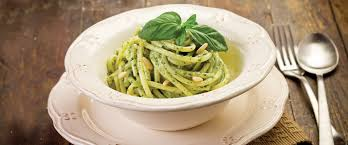

Pasta with pesto

Typical italian dish oting of the Liguria region, especially eaten in the summer.
It's a very easy and tasty dish that will make happy both adults and childs.
Igredients
- Pasta (80g)
- Basil (38g)
- Parmesan (10g)
- Pine nuts (8g)
- Garlic
- Evo olive oil
- Salt
Steps
- Put some water in a pot and heat on the stove. As soon the water starts boiling put pasta inside and wait around 10 minutes.
- Wile pasta is cooking wash and dry the basil
- Put basil, oil, salt, garlic and pine nuts in a blender
- Blend all the ingrediens togher untill the mixture is bright green
- Add the parmesan cheese and blend again until the mixture is the right consistency
- Drain the pasta, add pesto
- Enjoy your meal!
Home